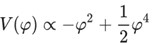
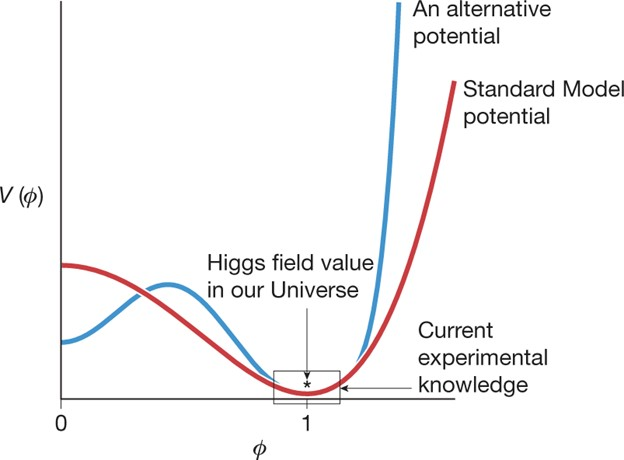
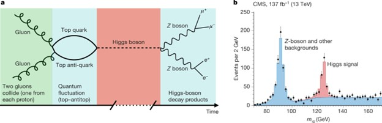

Experiments and research
Experiments at the LHC involve about 150 million sensors transmitting data 30 million times per second. After filtration, there remain several hundred interesting collisions per second. The data flow from all four experiments amounts to several GB/s, which corresponds to about 50,000,000 GB (= 50 PB) per year, equivalent to a stack of approximately 10 million standard DVDs reaching a height of about 12 km annually. Thousands of scientists worldwide have access to and analyze this enormous amount of data. The mission of the LHC computing network is to provide data storage and analysis infrastructure for the entire high-energy physics community using the LHC.
- ATLAS outputs about 1 GB/s
- CMS outputs about 1 GB/s
- LHCb - about 0.6 GB/s
- ALICE generates several GB/s during heavy-ion operation
The LHC achieves energies previously unmatched by any other particle accelerator. The energy of its particle collisions has only been encountered in nature before. And only with such a powerful machine can physicists delve deeper into the key mysteries of the universe. Some express concerns about the safety of what may form as a result of high-energy particle collisions. However, there is no cause for concern.
No particle can move faster than the speed of light in a vacuum; however, there is no limit to the energy a particle can achieve. In high-energy accelerators, particles typically move very close to the speed of light. In these conditions, as energy increases, the increase in speed is minimal. For example, particles in the LHC move at speeds 0.999997828 times faster than the speed of light at injection (energy = 450 GeV) and 0.999999991 times faster than the speed of light at maximum energy (energy = 7000 GeV). Therefore, elementary particle physicists typically think not in terms of speed but in terms of particle energy.
The classical Newtonian relationship between velocity and kinetic energy (K = (1/2)mv2) is valid only for speeds much lower than the speed of light. For particles moving at speeds close to the speed of light, we must use the Einstein equation from special relativity: K = (γ-1)mc2, where c is the speed of light (299,792,458 m/s), and γ is related to velocity through γ = 1/√(1-b2); b = v/c, and m is the particle's rest mass.
| Kinetic energy of proton (K) | Velocity (%c) | Accelerator |
| 50 MeV | 31.4 | Linac 2 |
| 1.4 GeV | 91.6 | PS Booster |
| 25 GeV | 99.93 | PS |
| 450 GeV | 99.9998 | SPS |
| 7 TeV | 99.9999991 | LHC |
Results of the LHC work:
- The Higgs boson was discovered, with its mass determined to be 125.09 ± 0.21 GeV.
- Basic statistical characteristics of proton collisions, such as the number of produced hadrons, their velocity distribution, Bose-Einstein correlations of mesons, distant angular correlations, and proton stopping probability, were studied for energies up to 8 TeV.
- The absence of proton-antiproton asymmetry was demonstrated.
- Unusual correlations of protons flying in significantly different directions were detected.
- Constraints on possible contact interactions of quarks were obtained.
- More significant signs of quark-gluon plasma formation in nuclear collisions were obtained compared to previous experiments.
- Events of hadron jet production were investigated.
- The existence of the top quark, previously observed only at the Tevatron, was confirmed.
- Two new decay channels of Bs mesons were discovered, and estimates of the probabilities of rare decays of B and Bs mesons into muon-antimuon pairs were obtained.
- The first data on proton-ion collisions at record energy were obtained, angular correlations previously observed in proton-proton collisions were discovered.
- The observation of the Y(4140) particle was announced, which was previously observed only at the Tevatron in 2009.
What is known about the Higgs boson?
Although the collision speed of particles in the LHC is very high, the rate of Higgs boson formation is very low. It took experiments like ATLAS and CMS more than two years (2011-2012) to find sufficient evidence of its existence. At a center-of-mass energy of 13 TeV, it is produced in approximately one out of a billion collisions. The Higgs boson quickly decays and is detected by identifying and measuring the products of its decay. For example, the decay of the Higgs boson into two high-energy photons has a probability of about 0.2% - thus, only 1 out of 500 produced Higgs bosons can be detected in this way.
On July 4, 2012, scientists and journalists gathered at CERN and remotely around the world to announce the discovery of a new fundamental particle, the Higgs boson. The discovery, made through the collaboration of ATLAS and CMS within the Large Hadron Collider (LHC), came almost 50 years after theorists postulated the existence of such a particle. The significance of the discovery lay not only in finding a new, long-awaited particle but also in providing the first direct evidence that there exists a new kind of fundamental "field" around us, known as the Higgs field.
As we will see below, the strength of interaction between any particle and the Higgs field directly affects a fundamental property of that particle: its mass. Thus, it ultimately determines the size of atoms, stabilizes protons, and sets the timescale for radioactive decay (β) that, for example, affects the lifetime of stars. However, in everyday life, we do not notice that the Higgs field surrounds us everywhere. The only way to detect the Higgs field is to disturb it, which is roughly the same as throwing a stone into water and seeing the ripples. The particle known as the Higgs boson is a manifestation of such a disturbance.
The significance of its discovery in 2012 was such that a year later, the Nobel Prize was awarded to François Englert and Peter Higgs, who, together with the late Robert Brout, first discussed the potential importance of such a field for fundamental physics. Since then, the Higgs boson has become a powerful tool for studying how the Higgs field, which underlies it, affects the fundamental particles of the Standard Model. Furthermore, the omnipresence of the Higgs field means that the Higgs boson is widely used today to search for signatures of particles or effects that are still unknown and lie beyond the Standard Model.
| Particle whose mass is governed by interaction with the Higgs field | Role in particle masses | Influence on everyday life | Experimental confirmation of Higgs particle interaction? |
| Up quark (mup ≈ 2.2 MeV/c²) Down quark (mdown ≈ 4.7 MeV/c²) | Affects the mass of protons and neutrons | Differences in quark masses (mup < mdown) contribute to the fact that protons (composed of two up and one down quark) are lighter than neutrons (composed of one up and two down quarks). As a result, protons are stable, as required for the existence of hydrogen. | No |
| Electron | Atomic radius ∝ 1/mv | A different electron mass would alter the energy levels and chemical reactions of all known elements. | No |
| W boson | Rate of radioactive beta decay ∝ 1/mW 4 | Many radioactive decays and reactions of thermonuclear fusion, which power the Sun, involve W bosons. The mass of W affects the rate of all these reactions. | Yes |
In the Standard Model, besides the Higgs boson, there are two types of particles. There are fermions, such as up and down quarks and the electron, which make up ordinary matter. These specific particles (along with one of the three neutrinos) are called first-generation fermions. Two more sets of fermions (second and third generations) include heavier particles that are typically not found in the surrounding world.
In addition, there are carriers of force: the photon, W and Z bosons, and gluon, collectively called vector bosons. When they are exchanged between two fermions, they create the force of attraction or repulsion between these fermions: photons carry the electromagnetic force, W and Z bosons the weak force, and gluons the strong force.
In the development of the electroweak part of the standard model, interactions of particles with the Higgs field were to become a central part of its formulation, especially to generate masses for the W and Z bosons, as required for consistency with experimental observations, while photons and gluons remain massless.
According to the Standard Model, there is a density of potential energy associated with the value of the Higgs field, and the minimum potential energy corresponds to a nonzero value of the Higgs field. The potential of the standard model takes a form determined by the conditions of internal consistency. With some simplifications, denoting the magnitude of the Higgs field as φ, the potential takes the form:
The minimum of the potential, i.e., the energetically most favorable choice for ϕ, lies at a non-zero value, ϕ = 1. An important conclusion of the non-zero constant value of the Higgs field is the inability to carry angular momentum or, more technically, "spin 0." A non-zero value of rotation would violate at least one of the well-established spacetime symmetries. Therefore, the excitation of the Higgs field, the Higgs boson, must be a particle with spin 0, and it is indeed the only known fundamental particle with this property.
The density of potential energy V(φ), associated with the Higgs field ϕ, as a function of the value φ. The red curve shows the potential of the standard model. The Higgs field takes a value corresponding to the minimum of the potential, and the region highlighted in black represents our current experimental knowledge of the potential. Alternative potentials, which significantly differ from the standard model far from this minimum (e.g., the blue curve), nevertheless correspond to current data.
Experimental studies of the Higgs boson take place at particle colliders. The probability of Higgs boson formation during collisions increases when the colliding particles strongly interact with the Higgs field, i.e., when they are heavy. At high center-of-mass energies, which are necessary, particle physicists know how to collide only two things: protons and electrons, as well as their antiparticles. This creates a problem because electrons and the particles that make up protons are light, meaning they interact very weakly with the Higgs boson.
The approach of particle physicists involves using the random creation of heavy particles during high-energy collisions of light particles, which then produce the Higgs boson. The LHC at CERN collides protons, which are primarily composed of quarks and gluons. The most common way the Higgs boson is formed is when a pair of gluons, one from each proton, collide and create a top quark and a top antiquark as a very short-lived quantum fluctuation. The top quark is the heaviest of the known particles (approximately 184 times the mass of a proton), so the top and antitop quarks strongly interact with the Higgs field, sometimes producing the Higgs boson. Shortly thereafter (approximately 10^-22 s later), the Higgs boson decays. About 2.6% of decays result in a pair of Z-bosons, which also decay almost instantly, for example, each into an electron-positron or muon-antimuon pair (so-called charged leptons), providing a characteristic experimental signature. This sequence is illustrated in the figure.
a, Illustration of one process of Higgs boson formation and decay at the LHC.
b, Total center-of-mass energy of four leptons (electrons and/or muons and their antiparticles) from the CMS experiment; the peak near 125 GeV corresponds to Higgs boson decays, while the peak near 91.2 GeV corresponds to decays of individual Z bosons (not induced by the Higgs). Decay into Z bosons was one of the channels used for discovering the Higgs boson, with other important discovery channels being decay into two W bosons and decay into two photons (the latter occurring through quantum fluctuations with top quarks and W bosons).
The ATLAS and CMS experiments at the LHC select events with four such leptons and record the total energy of the leptons (in their center-of-mass system). There are many ways to produce four leptons, but for events where they originate from the decay of the Higgs boson, it is expected that the total energy will cluster around the mass of the Higgs – the red peak in the figure. This latter point is crucial as the Higgs mechanism of the standard model predicts a very specific interaction strength of each particle with the Higgs boson. This red peak provides significant information:
- The presence of a peak near 125 GeV indicates the presence of a new particle, the Higgs boson.
- The position of the peak indicates the mass of the Higgs boson.
- Other characteristics of events in the peak, such as the relative angular distribution of leptons (not shown in the figure), confirm that the Higgs boson has no intrinsic angular momentum, meaning it is a spin-0 particle.
- The number of events in the peak is sensitive to the strength of the Higgs boson interaction, both with top quarks.
Experiments at the Large Hadron Collider (LHC) search for the Higgs boson in many formation and decay processes, each with additional sensitivity.
For example, one can observe the decay of the Higgs boson in events where top quarks are not just fleeting quantum fluctuations, but instead are formed as short-lived real particles that arise on their own as a result of collision along with the Higgs boson, and can be detected experimentally.
Many extensions of the standard model predict the existence of new bosons.
Dark matter may consist of unknown light bosons — a candidate for this role is the axion.
Supersymmetric theories predict the existence of sleptons — the supersymmetric partners of leptons. Such particles bear the respective names of selectron, smuon, and so on. If sleptons exist, they are extremely heavy.
The theory of grand unification predicts the existence of a unified interaction, into which weak, strong, and electromagnetic interactions merge at very high energies. The carriers of such interaction are X and Y bosons.
Hexaquarks are hypothetical mesons consisting of six quarks. Currently, there are several candidates for such a particle, but they are still unconfirmed. Some variants of hexaquarks are very stable, so they are also considered as candidates for dark matter.